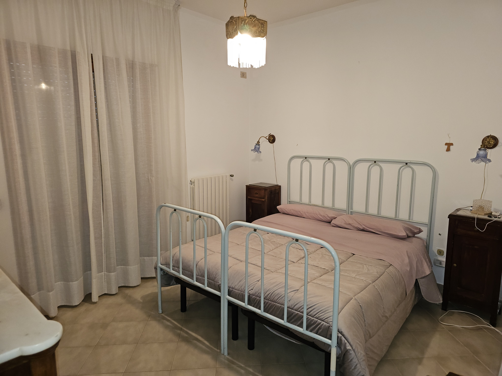
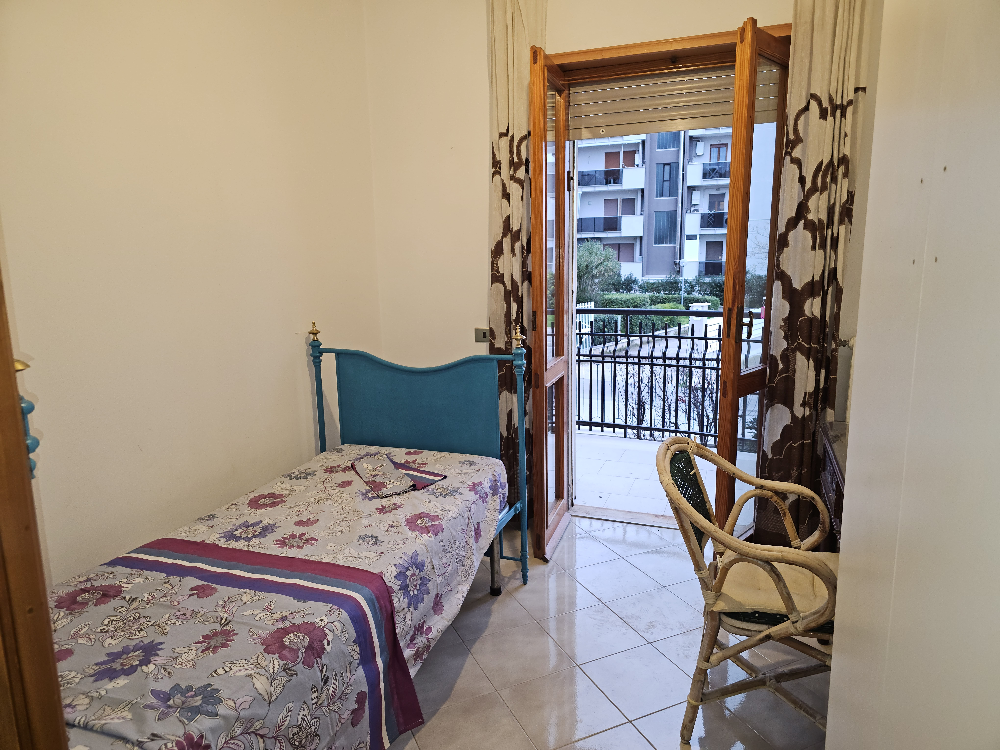
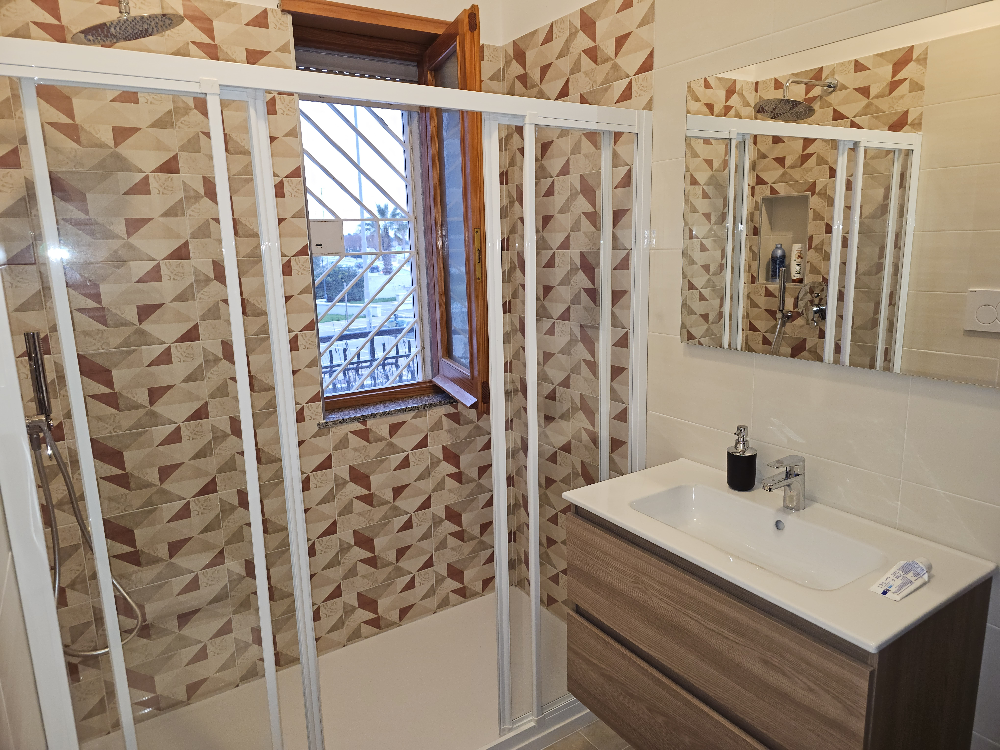
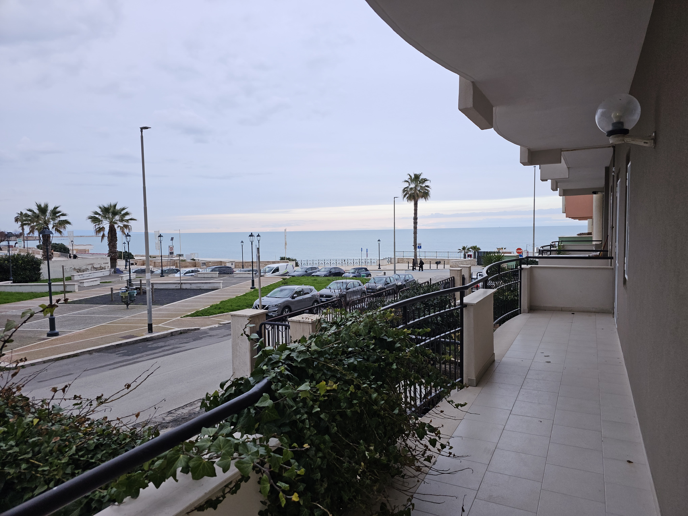

Esplora gli spazi
Dall'ingresso luminoso al giardino privato, ogni dettaglio è curato per il tuo relax.

Ingresso (Clicca per vedere tutte le foto)

Camera 1 (Clicca per vedere tutte le foto)

Camera 2 (Clicca per vedere tutte le foto)

Camera 3 (Clicca per vedere tutte le foto)

Il Bagno (Clicca per vedere tutte le foto)

Il Giardino (Clicca per vedere tutte le foto)

Vista Balcone (Clicca per vedere tutte le foto)
×